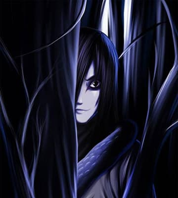

Биография
Орочимару – бывший шиноби Конохи, один из Трёх Легендарных Саннинов. Он стремился к бессмертию, проводил эксперименты и был изгнан из деревни.
Способности
- Бессмертие: Орочимару меняет тела, избегая старости.
- Регенерация: Может восстанавливать своё тело после повреждений.
- Призыв змей: Вызывает гигантского змея Манду.
- Проклятая печать: Усиливает шиноби, давая им дополнительные силы.
Роль в истории
Орочимару сыграл ключевую роль в нападении на Коноху, создании Проклятой Печати и деревни Ото-гакуре. Позже помог Шиноби Альянсу в Четвёртой Мировой Войне.
Галерея
Изображения Орочимару:
